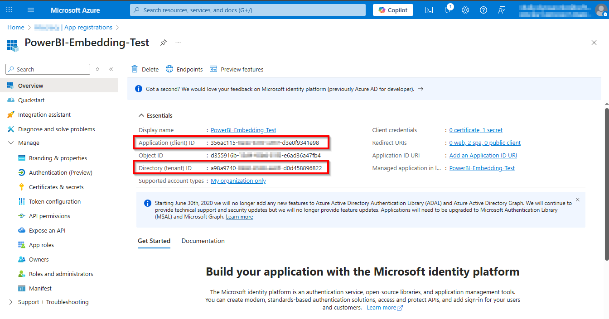
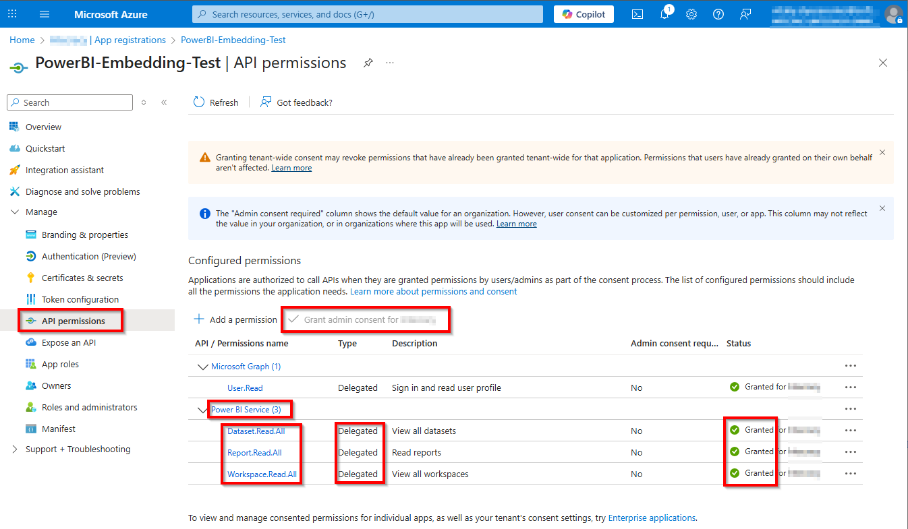
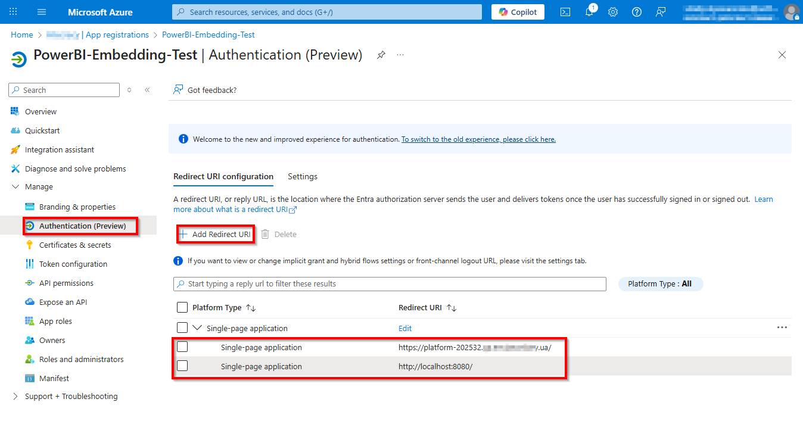
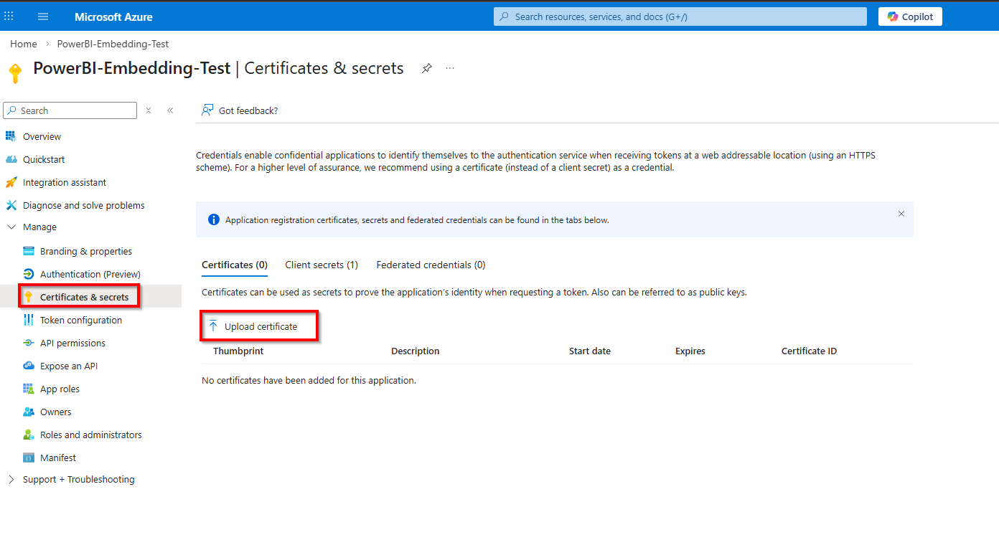
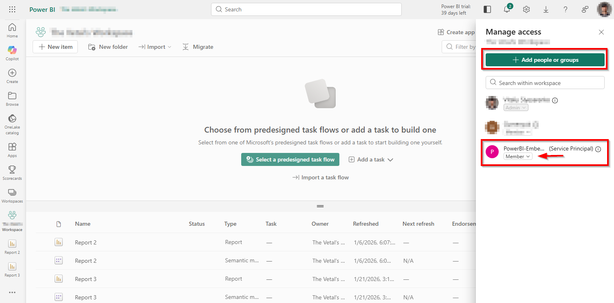
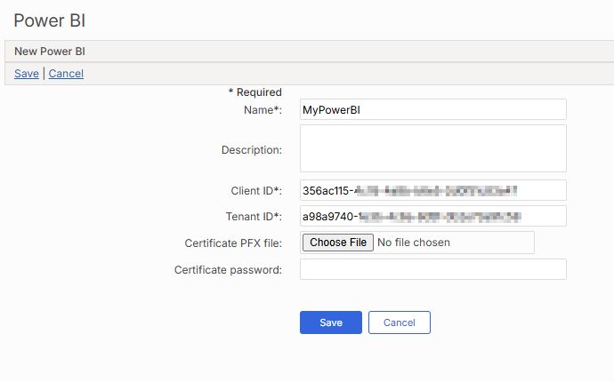
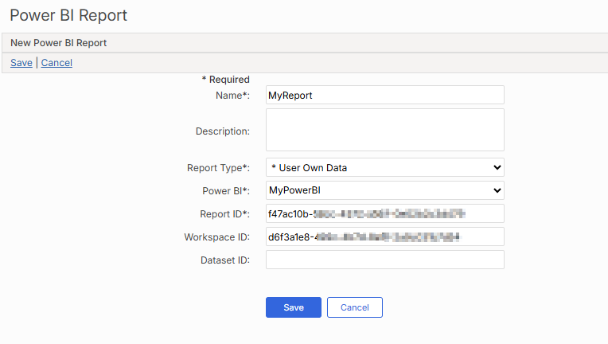
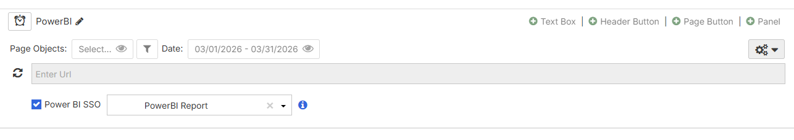

When embedding PowerBI reports into an iFrame, you can enable PowerBI SSO to allow users to automatically authenticate and view the report in the Portal without needing to log in. There are two options for viewing PowerBI reports:
For either report type, you will first need to create an Entra ID in Microsoft Azure. For more information, see the Microsoft Entra Documentation.
To enable PowerBI SSO, you must first create the Entra ID App and configure the appropriate permissions in Microsoft Azure. Once set up, you must then add the IDs to the platform.
Create the Entra ID App and get the Client and Tenant IDs.

Add the permissions.
Admin consent must be granted for all permissions.

Set the URL of the host where the Portal is deployed.

For App Owns Data report types, create and upload a certificate.

For App Owns Data report types, do the following:
In PowerBI, navigate to Settings > Admin portal.
Open Tenant settings.
Enable Service principals can call Fabric public APIs and Embed content in Apps for the entire organization.
Navigate to the workspace that contains the report.
Click Manage access.
Click Add, select your Entra App, and grant it the role of Member.

In Advanced Calculations (EMS), under Setup > Security > PowerBI, click New Power BI.
Enter a Name, the Client ID, and the Tenant ID.
For App Owns Data report types, upload a Certificate and Certificate password.

Click Save.
Click New Power BI Report.
Enter a Name, PowerBI, and Report ID,
Choose a Report Type:
App owns data - The data set the user views is related to the PowerBI app and agnostic of the user. The user will not have different visibility to the data based on permissions/provisioning in Microsoft Entra/PowerBI.
User owns data - The user views the data set based on their permissions/provisioning in Microsoft Entra/PowerBI.
Optionally, enter a Workspace ID and Dataset ID. 
Click Save.
Once security permissions are configured, you can enable PowerBI SSO in iFrame panels in the Portal.

When you select the PowerBI report, it can then be accessed by users signed in to company devices without any additional log in. When you open that page or panel, the PowerBI report will authenticate the user in the background and start loading the report.
Depending on how the PowerBI report was configured, users will see different data.